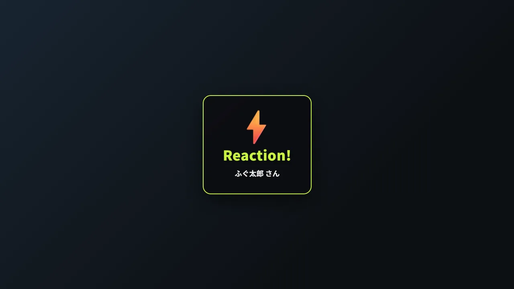
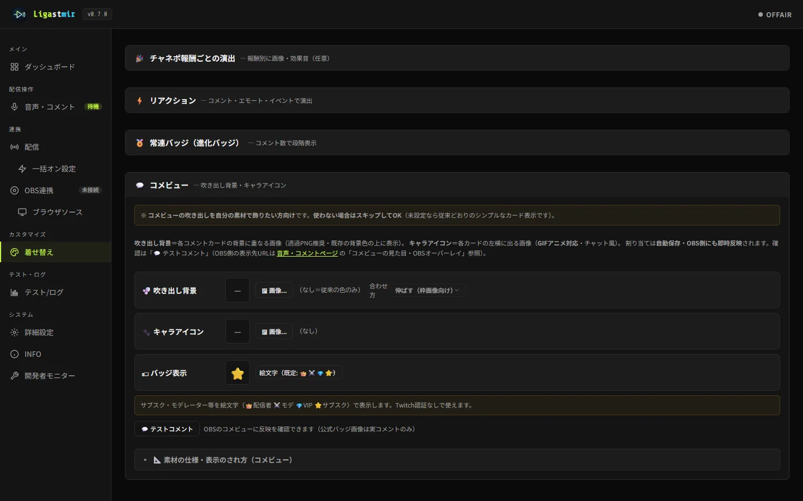

コメントやスタンプで画面に演出を出す方法
Ligastmir（無料）の「リアクションパレット」を使うと、
視聴者のコメントやスタンプ、フォローなどのイベントをきっかけに、
画像・効果音・絵文字の演出を自動で出せます。
たとえば「
888 と打たれたら拍手の音」「このスタンプで絵文字が舞う」といった仕掛けを、
配信を止めずに用意できます。素材を持っていなくても、既定の演出で今すぐ試せます。
できあがりの例


3つの「きっかけ」から選べます
💬 キーワード
コメント本文に特定の語が含まれたら発火。「含む／完全一致／前方一致」を選べます。
😀 スタンプ
特定のエモートが使われたら発火（Twitch）。
🎉 配信イベント
フォロー・サブスク・レイドなどのイベントで発火。
チャンネルポイント報酬ごとの演出も同じページから設定できます（「🎉 報酬演出」）。
報酬ごとに違う画像・音を割り当てられます。
最短手順（5ステップ）
アラートのURLをOBSに追加する「ブラウザソース」ページからアラートのURLをコピーし、OBSの「ブラウザ」ソースに貼ります（推奨 800×600）。演出はこのソースに出ます。
「着せ替え」→「⚡ リアクション」を開くここに演出を1行ずつ足していきます。
きっかけを決めるキーワード／スタンプ／イベントから選び、対象（例：
888）を入力します。出す演出を割り当てる画像・効果音・絵文字を指定。何も割り当てなくても既定の演出が出るので、まず試すだけならこのままでOKです。
クールダウンを決めてテスト「▶ テスト」ボタンでOBSの見え方をその場で確認できます。
荒れた時に出しすぎない工夫
- 個別のクールダウン — そのリアクションを連続で出さない待ち時間。
- 全体の最小間隔 — すべてのリアクション共通の間隔。連投の洪水を防ぎます。
- 優先度 — リストの並び順が優先度。1つのコメントで発火するのは1つだけです。
何も設定しなければ演出は一切出ません（動作も軽いままです）。使いたい人だけ足していく方式なので、気軽に試せます。
うまくいかないとき
演出が画面に出ない
アラートのブラウザソースがOBSに追加されているか確認してください（リアクション・報酬演出はアラートと同じソースに出ます）。→ 使い方 ②OBSに表示する
スタンプのきっかけが反応しない
スタンプ（エモート）トリガーは Twitch のコメントで動きます。エモートのコード名が正確か確認してください。
演出が出すぎる／出なさすぎる
クールダウンと全体の最小間隔を調整してください。→ 使い方 ⑦-2 リアクション演出
素材の権利について： 演出に使う画像・効果音は、ご自身が利用権を持つ素材をお使いください。
フリー素材の場合も配布元の規約（再配布可否・クレジット要否・商用可否）をご確認ください。
※Ligastmir 自体に演出用の画像・音は同梱されていません。